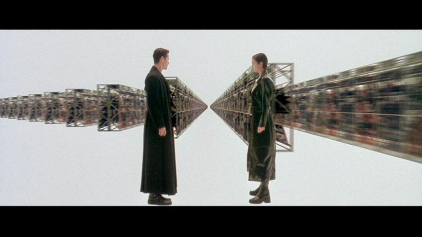

Pseudoproxy modelling of uncertainties in palaeoecological data.
Quinn Asena, George Perry, Janet Wilmshurst
University of Auckland, UW-Madison
11/3/22
The problem
Proxy data are the product of multiple sources of uncertainty
Environmental processes
- bioturbation, taphonomy, variable sedimentation rates…
Field and laboratory methods
- core collection methods, sub-sampling strategy, pollen counting…
Data processing methods
- age-depth modelling, interpolation…
The question: is the past recoverable from the data?
Why it matters
Palaeoecology moving from descriptive to quantitative
Palaeoecology to inform the future requires robust statistical approaches
Advances in lab methods, data availability, and statistics is making more
What we can do about it
- One method to assess uncertainties is in simulation
Approach and take-home
Simulate core samples containing proxies that mimic the statistical properties of empirical data
Simulate uncertainties: process and observer error that affect the data
Assess how statistical inferences are affected by those uncertainties
Key concepts
Virtual ecology (Zurell et al. 2010)
Proxy system modelling (Evans et al. 2013)
Pseudoproxy experiments (Mann and Rutherford 2002)
Other key refs:
Virtual ecology
Virtual ecology is a framework for assessing sampling and analytical methods in simulation consisting of:
an ecological model that generates synthetic data
1a. a degradation model
a simulated observational process (a sampling model) that samples the synthetic data
an analytical process or statistical model applied to both sets of data
an assessment of the results
Virtual ecology and empirical ecology
Perfect knowledege, imperfect world
known drivers and responses
known environmental and observational processes
Advantage of benchmark/control data
Advantage of replication
Able to systematically introduce uncertainty
Perfect world, imperfect knowledge
Sampled data with no benchmark/control
Advantage of being reality
Proxy system modelling
Describes the process by which environmental change is recorded as an observable signal in an archive:
environmental drivers (e.g., climatic variability)
a sensor (a physical, biological or chemical component of the system that responds to the environmental drivers)
an archive (the medium in which the response of the sensor is recorded such as a lake sediment)
observations drawn from the archive
Proxy Ststem Modelling framework, from Evans et al. (2013)
Pseudoproxy experiments
Borrowing the term “pseudoproxies” from climatology:
pseudoproxies are simulated data or modified observational data
mimic the statistical properties of empirical data
pseudoproxy experiments are similar to virtual ecology
Building the model
Simulating pseudoproxies
We set out to:
Represent multiple interacting drivers
Include underlying ecological dynamics that can undergo community turnover
Generate a multi-species pseudoproxy
Recreate core formation processes of accumulation rates and time-span
Virtually recreate the observational processes
Simulating pseudoproxies

Ruining pseudoproxies
A. Example species from single replicate
B. Mixing
C. Mixing + sub-sampling
D. Mixing + sub-sampling + proxy counting
Ruined pseudoproxies
Applying the model
Analyses
Ok, now we have generated the data, let’s analyse it. Two analyses:
Fisher Information
Principal curves
Demonstrating two scenarios with different driving environments.
Scenario 1
Scenario 2
Assessing uncertainties across replicates
Each replicate results in 1210 datasets from the ‚Äòerror-free‚Äô to the most uncertain, per scenario üò±.
Across replicates for each of the 1210 datasets:
extract features from the FI and PrC
- feature analysis reduces the FI and PrC to one dimension
calculate the distance between each dataset from the ‘error-free’ to the most uncertain
make cool visulisations!

Assessing uncertainties across replicates
Quantify the difference between the ‘error-free’ archive and each level of uncertainty. The following is an example from scenario 1 using Fisher Information.
Assessing uncertainties across replicates
Application to empirical
Simulation methods can be integrated with empirical studies to:
a priori help shape field sampling methods: e.g., number of core samples (across a region or local replication) required for a given research question.
understand the sub-sampling and count resolution required to increase the likelihood of detecting a hypothesised signal in the data.
accompany empirical study to test hypotheses about the underlying dynamics that may cause an observed pattern in the data.
assess whether inferences made from the data are robust to uncertainty.
What I haven’t covered
“All models are wrong, some are useful” Box (1979)
Assessing error rates
Chronological uncertainty
Extend underlying dynamics to ask specific questions (e.g., resilience)
Acknowledgements
George Perry (University of Auckland) and Janet Wilmshurs (University of Auckland, and Manaaki Whenua – Landcare Research)
Jack Williams and Tony Ives (University of Wisconsin Madison)
Biological heritage Science Challenge (NZ) and the National Science Foundation (USA)